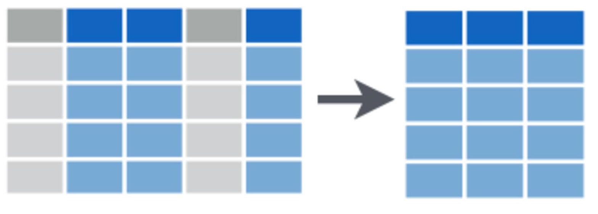

We often want to subset our data, whether it’s to examine particular rows or columns of our dataset, or to pull out observations with particular properties. We may conduct subsetting at the data exploration stage to investigate whether our response variable differs in its relationship to a particular predictor variable across categories (e.g., to look for an interaction). We may also like to pull out elements of our dataset for separate analyses.
In this exercise, we will load a dataset where bats were sampled across regrowth forest in south-eastern Australia which has been thinned to reduce the density of trees.
The dataset includes measurements of total number of bat calls (“Activity”) and number of bat calls that indicate foraging behaviour (“Foraging”) recorded over one night for 47 sites and 173 sampling nights in total. Variables relating to forest thinning have been collected and are listed as columns ending in “thinned”. As the forest studied was in a floodplain, covariates relating to water availability were also collected and are listed in columns ending “water”.
First, download the data set, Bats_data.csv, and load into R.
Bats <- read.csv(file = "Bats_data.csv", header = T, stringsAsFactors = F)Check the structure after you have loaded the data with the str function.
Now that we have some idea of the dataset we are working with, we can use the [] and $ operators to select rows and columns in a dataframe. It’s quite simple: we place the name of the dataframe we want to select from before the square brackets and inside the square brackets we place a comma. Numbers to the left of the comma represent rows we’d like to select and numbers to the left of the comma represent columns we’d like to select.
For example, if we wanted to select only data from the first three rows and all columns, we would use:
Bats[1:3, ]If we wanted only the last four columns and all rows, we would use:
Bats[, 7:10]In combination, this would select data from only the first three rows from the last four columns:
Bats[1:3, 7:10]If the row and column numbers that you want do not form a sequence, we can use the >c() function to concatenate row or column indices. For example, let’s add the sixth row and the 2nd column to our selection from above:
Bats[c(6, 1:3), c(2, 7:10)]Rather than working out which variable is in which numbered column, it is often easier to use the variable names in a data frame and select the variable using $ operator. For example, to choose only the Site variable:
Bats$Site
The package dplyr has many convenient functions for subsetting that can be more intuitive and quick for you. First, install then load the package:
library(dplyr)Subsetting by row numbers
If you know the row numbers that you are interested in subsetting, you can easily select these rows either using square brackets as discussed above or the slice function in dplyr.
For example, to select just rows 10-12 in the dataframe, you would use:
Bats.slice <- slice(Bats, 10:12)Selecting rows that meet certain criteria
We can subset these rows using the filter function. For example, if wanted only the rows where foraging activity was recorded, we could select for rows where the count of foraging calls was greater than zero.
Bats.foraging <- filter(Bats, Foraging > 0)You can experiment with a range of logical operators when using the filter function
< less than
>greater than
==equal to
<=less than or equal to
>=greater than or equal to
!=not equal to
in.NA=is NA
!is.na=is not NA
and more.
You can use the commands ?base::Logic and ?Comparison to learn more about these operators.
You will notice that while using the above functions, we have mostly assigned them to new objects, e.g., Bats.foraging <-... . This gives us the option to use the newly subsetted data for further computations.
Taking a random selection of rows
We may want to randomly select a number or fraction of rows in our dataset to validate our models. For example, we could take 50% of the data to build the model and then 50% of the model to test it against observed data. Random selection of rows is important if we are going to split the data up this way, because we don’t want to bias our data to any particular properties or categories. Here we make a new dataframe “Bats.50p” which has half the number of rows of the initial dataset:
Bats.50p <- sample_frac(Bats, size = 0.5, replace = FALSE)Similarly, we could ask for a certain number of rows to be randomly sampled from the data set. For example, to randomly sample 100 rows, we would use:
Bats.100r <- sample_n(Bats, 100, replace = FALSE)Selecting rows with the highest values
dplyr has a neat function for selecting n rows with the highest values of any given column: top_n. Below, we identify the three rows of data which contain the greatest total bat activity per night:
Bats.top <- top_n(Bats, 3, Activity)
print(Bats.top)## Site Activity Foraging Date Treatment.thinned Area.thinned Time.since.thinned Exclusion.thinned Distance.murray.water Distance.creek.water
## 1 CC04A1 802 9 7/01/2013 short-term 0 0 11.932831 143.9868 102.5009
## 2 PC32A2 1070 66 7/01/2013 medium-term 0 8 7.150972 429.2099 694.7085
## 3 PC32A2 944 52 8/01/2013 medium-term 0 8 7.150972 429.2099 694.7085Wow, over 1000 bat calls in one night!
Removing duplicate rows
Another useful function is to remove duplicate rows, for example if we have accidentally entered data twice.
Bats.distinct <- distinct(Bats)We can compare the number of rows between our original dataset and our new dataset with duplicates removed and our old dataset using <nrow:
nrow(Bats)## [1] 173nrow(Bats.distinct)## [1] 173In this case, the dataframes are identical because our data doesn’t have any duplicate rows.

As discussed above, you can select one column $ or one or more by indexing with []. dplyr has the function select which allows you to select columns by name or by using useful helper functions.
Selecting columns by name
For example, to select just the Site column from the data frame, or both the Site and Date columns:
Bats_subset1 <- select(Bats, Site)
Bats_subset2 <- select(Bats, Site, Date)Selecting several columns by their position
To select a group of columns adjacent to each other use the first and last names separated by :. For example, this selects all columnns between Site and Date.
Bats_subset3 <- select(Bats, Site:Date)Selecting columns by their properties
The in-built helper functions within select allow you to select particular columns according to their properties.
For example, we could select the two columns (Distance.murray.water & Distance.creek.water) by the start of the column names, or the end of the column names:
Bats_subset4 <- select(Bats, starts_with("Distance"))
Bats_subset4 <- select(Bats, ends_with("water"))If you are familiar with regular expressions, you can use the match helper function. For example, to select those same two columns, we could use ^ to indicate the column name starts with the following characters and $ to indicate the column name ends with the preceding characters.
Bats_subset4 <- select(bats, matches("^Distance"))
Bats_subset4 <- select(bats, matches("water$"))We can use contains when we want to select columns that contain certain characters or words in their name.
Bats_subset4 <- select(Bats, contains("water"))The helper function one_of will select columns that belong to a list of column names, remembering to use c() to concatenate the list of names.
Bats_subset4 <- select(bats, one_of(c("Distance.murray.water", "Distance.creek.water")))Note that all the last 6 uses of select did exactly the same thing - pulled out the two columns, Distance.murray.water and Distance.creek.water.
You can also name particular columns that you want to exclude from the selection using a minus in fron of the column name to be excluded. For example, to make a data frame that no longer has the Foraging variable:
Bats_subset5 <- select(Bats, -Foragaing)Finally, if you have numbered columns, we can use the numrange helper function to select particular columns. For example, this code would select for columns named var1, var2, & var3.
select(data, num_range("var", 1:3))This tutorial was based on the excellent Data wrangling with dplyr and tidyr cheat sheet produced by Rstudio. Images were sourced from the same document.
You can type ?dplyr to get help with this package.
Author: Rachel V. Blakey
Year: 2016
Last updated: Feb 2022